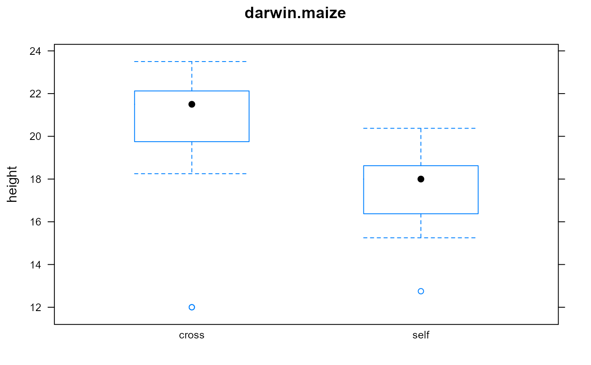

darwin.maize.RdDarwin's maize data of crossed/inbred plant heights.
A data frame with 30 observations on the following 4 variables.
potPot factor, 4 levels
pairPair factor, 12 levels
typeType factor, self-pollinated, cross-pollinated
heightHeight, in inches (measured to 1/8 inch)
Charles Darwin, in 1876, reported data from an experiment that he had conducted on the heights of corn plants. The seeds came from the same parents, but some seeds were produced from self-fertilized parents and some seeds were produced from cross-fertilized parents. Pairs of seeds were planted in pots. Darwin hypothesized that cross-fertilization produced produced more robust and vigorous offspring.
Darwin wrote, "I long doubted whether it was worth while to give the measurements of each separate plant, but have decided to do so, in order that it may be seen that the superiority of the crossed plants over the self-fertilised, does not commonly depend on the presence of two or three extra fine plants on the one side, or of a few very poor plants on the other side. Although several observers have insisted in general terms on the offspring from intercrossed varieties being superior to either parent-form, no precise measurements have been given;* and I have met with no observations on the effects of crossing and self-fertilising the individuals of the same variety. Moreover, experiments of this kind require so much time--mine having been continued during eleven years--that they are not likely soon to be repeated."
Darwin asked his cousin Francis Galton for help in understanding the data. Galton did not have modern statistical methods to approach the problem and said, "I doubt, after making many tests, whether it is possible to derive useful conclusions from these few observations. We ought to have at least 50 plants in each case, in order to be in a position to deduce fair results".
Later, R. A. Fisher used Darwin's data in a book about design of experiments and showed that a t-test exhibits a significant difference between the two groups.
Darwin, C. R. 1876. The effects of cross and self fertilisation in the vegetable kingdom. London: John Murray. Page 16. https://darwin-online.org.uk/converted/published/1881_Worms_F1357/1876_CrossandSelfFertilisation_F1249/1876_CrossandSelfFertilisation_F1249.html
R. A. Fisher, (1935) The Design of Experiments, Oliver and Boyd. Page 30.
library(agridat) data(darwin.maize) dat <- darwin.maize # Compare self-pollination with cross-pollination libs(lattice) bwplot(height~type, dat, main="darwin.maize")#>#> #> One Sample t-test #> #> data: d2$diff #> t = 2.148, df = 14, p-value = 0.0497 #> alternative hypothesis: true mean is not equal to 0 #> 95 percent confidence interval: #> 0.003899165 5.229434169 #> sample estimates: #> mean of x #> 2.616667 #>## One Sample t-test ## t = 2.148, df = 14, p-value = 0.0497 ## alternative hypothesis: true mean is not equal to 0 ## 95 percent confidence interval: ## 0.003899165 5.229434169 # }